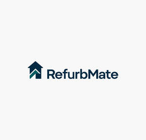

Trade Mark Journal No.2025/052 26 December 2025
UK00004310699 15 December 2025 (37)

- Class 37
- Refurbishment of buildings; Apartment refurbishment services; Renovation and repair of buildings; Interior refurbishment of buildings; Building refurbishment services; Building repair and renovation; Renovation and restoration of buildings; Renovation of plumbing; Restoration of bathroom fittings; Renovation, repair and maintenance of electrical wiring; Services for the redecoration of buildings; Renovation of kitchens; Buildings (Renovation of -); Repair and maintenance of buildings in case of demolition; Furniture restoration, repair and maintenance; Boiler cleaning and repair; Renovation of electrical wiring; Joinery [repair]; Maintenance and repair of hardware; Building repairs; Services for the renovation of buildings; Maintenance and repair of flooring; Warehouse construction and repair; Repair of kitchen furniture; Maintenance and repair of parts and fittings for buildings; Repair of laminate flooring; Repair of carpets; Renovation of property; Repairs to buildings; Concrete renovation; Repair of buildings; Roof restoration; Building repair; Restoration of retail premises; Glazing, installation, maintenance and repair of glass, windows and blinds; Maintenance and repair of buildings; Building maintenance and repair; Boiler repair services; Maintenance and repair of office buildings; Roof repair; Maintenance and repair of residential buildings; Maintenance and repair of upholstery; Window replacement; Restoration of buildings; Buildings (Restoration of -); Repair of tiles; Building restoration; Repair or maintenance of building equipment; Installation, maintenance and repair of kitchen equipment; Building construction and repair; Joinery services [repair of woodwork]; Repair or maintenance of boilers; Maintenance and repair of cooling appliances and installations; Repair of wood flooring; Interior renovation of commercial premises; Cleaning of building interiors; Plumbing installation, maintenance and repair.
DJ Brand Marketing Limited